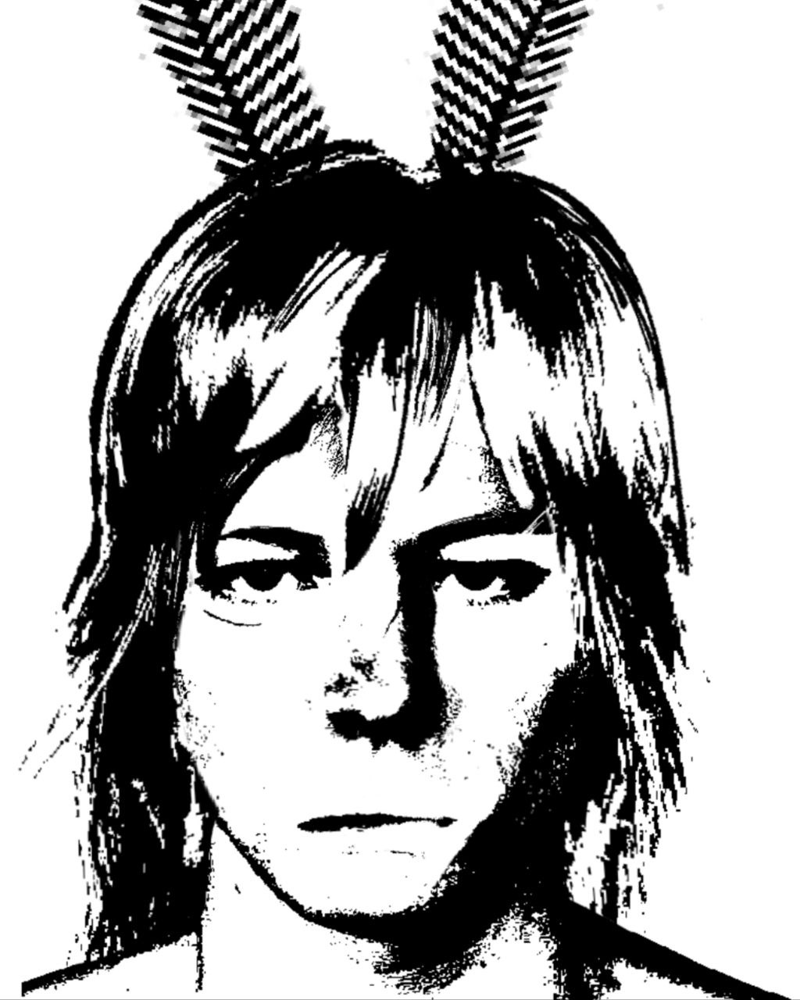

Role: Operative / Tracker / Execution Specialist
— Medium height, lean build
— Shoulder-length blond hair, unkempt; frequently obscures facial expression
— Black tactical face paint during operations
— Movements controlled, deliberate; minimal wasted motion
— Maintains visual awareness patterns consistent with tracking behavior
Kroker is logical, methodical, and emotionally restrained in outward presentation. However, underlying psychological dependency introduces instability under specific conditions.
Judging by the mission footages, he is one of those operatives... The barbarian calls them "Ram." Something like a punching force. He acts precisely, strictly, avoiding everything unnecessary, moving directly toward his goal.
He also maintains a strict internal framework for how operations should proceed. When reality deviates, he does not adapt fluidly—instead, he attempts to force alignment, which can result in momentary disorientation or escalation.
The same confusion can be achieved by cutting Kroker off from the rest of the squad. ;;;;-]
— Core fear: isolation
— Attachment dependency
— Emotional suppression layered over instability
— Compensatory need for control and order
Notable detail: For some reason, he keeps a photograph in his uniform pocket. Accounts of what it is vary, but he seems very protective of it.
No matter how reliable he is, all this remains so as long as he knows exactly where he's going. Or at least not exactly, but he knows.
I think if you closed his eyes and spun him around, he'd instantly lose it. And lose his composure. But getting him off track is, to put it mildly, not easy.
Firstly, he thinks through quite a lot of things. Secondly, he's incredibly assertive. Ironically, he seems driven by a single-minded hatred of his enemies.
Achieving his goals is the priority, and his enemies are obstacles to be eliminated.
If you hear someone shouting something to their comrades or to us on the battlefield, it means Daniel is one of them.
There's reason to believe he's only like this on the battlefield. The adrenaline must be hitting the boy hard in the head.
Predictable inputs > predictable outputs, eh?
He often works in conjunction with Ariel Hendrickson. It took us a shamefully long time to realize something was going on between the two of them.
In a way, they're counterbalances for each other. But that's not all. Daniel seems to be heavily dependent on Ariel.
Having his partner nearby seems to be part of any of his plans, so he becomes nervous and loses focus when Ariel moves away or goes out of sight during a mission.
So he's one of our two lovebirds. I bet that if one of them dies on a mission where they're working together, the other will collapse next to him and not move until he's finished off too XXXXD
